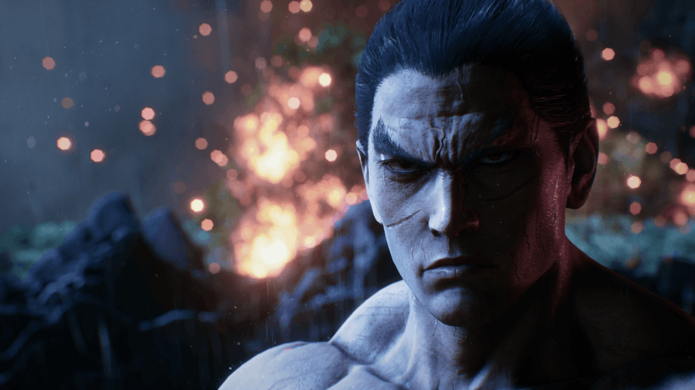

Kazuya Mishima (Japanese: 三島 一八, Hepburn: Mishima Kazuya) is a character and one of the main antagonists of Bandai Namco's Tekken series. Debuting as the protagonist of the original game, Kazuya has since become one of the series' most prominent villains after serving as the penultimate boss of the series' second installment. The son of wealthy zaibatsu CEO Heihachi Mishima, Kazuya seeks revenge against his father for throwing him off a cliff years earlier. Kazuya becomes corrupted in later games, seeking to obtain more power and eventually coming into conflict with his own son, Jin. Kazuya Mishima possesses the Devil Gene, a demonic mutation, which he inherited from his late mother, Kazumi, which can transform him into a demonic version of himself known as Devil Kazuya (デビル一八, Debiru Kazuya). Devil Kazuya has often appeared as a separate character in older installments prior to becoming part of Kazuya's moveset in Tekken Tag Tournament 2 and later games. Kazuya Mishima is also present in related series media and other games.